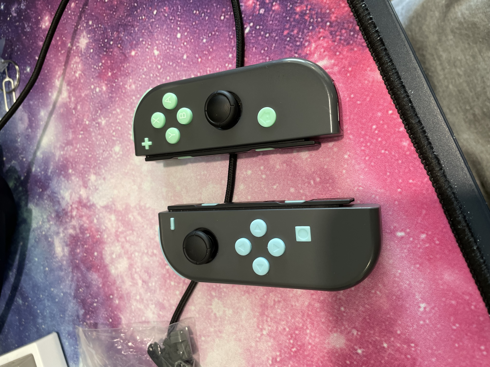
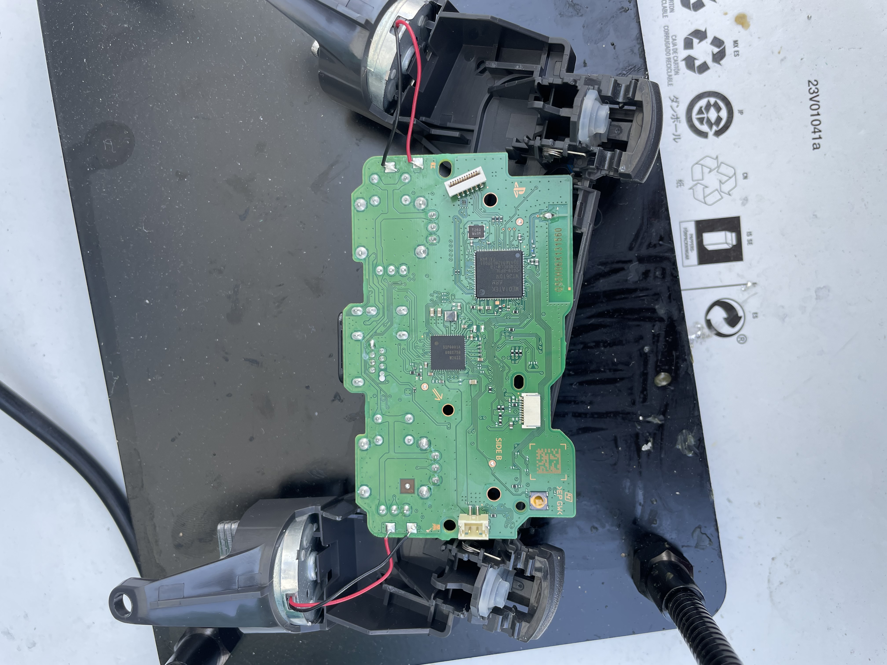

Joy-cons (fixed)
Not a whole lot to say about these. I replaced the original buttons with new buttons. The buttons themselves feel kinda rubbery, but not too bad (in my biassed opinion). I also replaced the joycons' joysticks, so there shouldn't be any drifting for a couple more years depending on how much you use them.
Xbox 1S controller (rebuilt)

The title says it all; this is an Xbox 1S controller that was rebuilt. What does that mean? It was destroyed. The plastic housing and joysticks were damaged beyond repair. So I bought a new shell replacement kit and some new joysticks, and it works almost as good as new. HOWEVER, the new sticks are too sensitive, and don't seem to be tuned for Xbox controllers. I've tried a few ways to tweak this, but to no avail. Still works, just overly sensitive. However, I might be willing to sell this controller at a later date.
PS4 controller (broken)
This controller was an interesting find. I replaced the plastic sticks and the joysticks. It worked until I plugged the battery back in WHILE the controller was still plugged into my PC... The orange light flashes a few times while charging before shutting off completely. I believe I shorted the main chip, though I'm not entirely sure. I don't have the equipment to test/fix this issue, so I will be selling this at some point for a very cheap price.
Red joy-cons (fixed)

These joy-cons are the first pair I ever owned, and have been with me for about 5 years. I've treated them well, and have replaced the joysticks twice. Works great still to this day.
Orange and Purple joy-cons (fixed)
These are the second pair of joycons I have (first and only pair purchased separately). They work great, and I've had them for about 3 years now. I replaced the buttons for fun, but will be switching them back to the factory buttons. The current buttons are starting to wear down and fade. The joysticks were replaced once.
PS5 Controller (partially fixed)
This PS5 controller was drifting, and all the buttons didn't work. I cleaned the inside and replaced the joysticks/potentiometers, and the controllers work well for the most part. I was able to fix the face and bumper buttons, but was (and still currently) unable to fix the triggers. Both triggers are always slightly active. On top of that, both triggers are activate the other and I can't figure out why.
PLEASE NOTE: SOME OF THESE ITEMS ARE NOT ACTUALLY FOR SALE. THEY'RE JUST HERE AS TEMPERARY PLACEHOLDERS! I will update this page and the links as soon as I get a chance to post what I'm willing to sell.